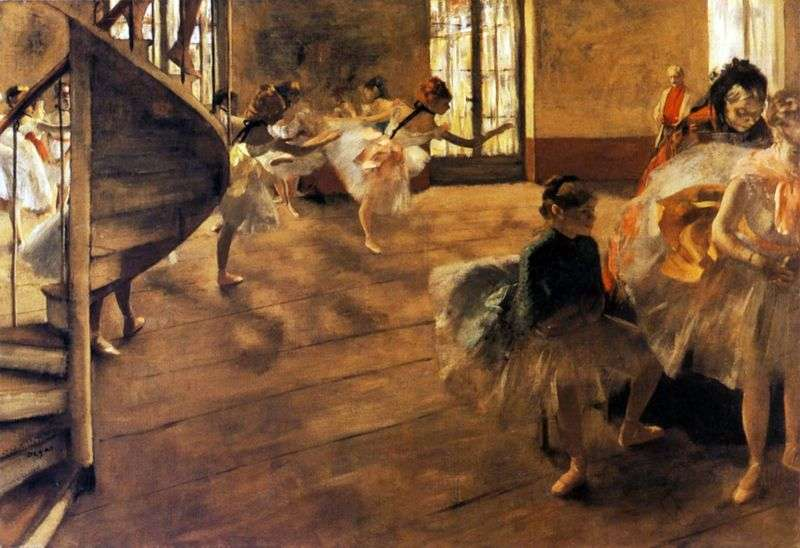

French artist famous for his pastel drawings and oil paintings of ballerinas. Degas also produced bronze sculptures, prints, and drawings. Degas is especially identified with the subject of dance; more than half of his works depict dancers. Although Degas is regarded as one of the founders of Impressionism, he rejected the term, preferring to be called a realist, and did not paint outdoors as many Impressionists did.
Degas was a superb draftsman, and particularly masterly in depicting movement, as can be seen in his rendition of dancers and bathing female nudes. In addition to ballet dancers and bathing women, Degas painted race horses and racing jockeys, as well as portraits. His portraits are notable for their psychological complexity and for their portrayal of human isolation.
Edgar Degas called himself as "the color painter who uses lines". His art conbines the lines of Classicism and the colors of Impressionism together. He strived to show the tension of light and colors in lines. Many of Degas's works demonstrate the style of Keyhole asthetics. Although Degas liked to depict the beautiful and lively images of Ballet dancers, he himself is a pessimist, which could be reflected by the pale face and dull eyes of the Ballet dancers he depicted.